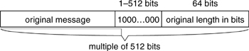
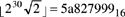
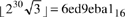

Networking Security Networking Security Networking Security Security Networking Security Networking Security Networking Charlie Kaufman Radia Perlman Mike Speciner Prentice Hall Network Security: Private Communication in a Public World, Second Edition Networking Security Networking Security Networking Security Security Networking Security Networking Security Networking Charlie Kaufman Radia Perlman Mike Speciner Prentice Hall Network Security: Private Communication in a Public World, Second Edition
5.4. MD4
MD4 was designed to be 32-bit-word-oriented so that it can be computed faster on 32-bit CPUs than an octet-oriented scheme like MD2. Also, MD2 requires the message to be an integral number of octets. MD4 can handle messages with an arbitrary number of bits. Like MD2 it can be computed in a single pass over the data, though MD4 needs more intermediate state.
5.4.1. MD4 Message Padding
The message to be fed into the message digest computation must be a multiple of 512 bits (sixteen 32-bit words). The original message is padded by adding a 1 bit, followed by enough 0 bits to leave the message 64 bits less than a multiple of 512 bits. Then a 64-bit quantity representing the number of bits in the unpadded message, mod 264, is appended to the message. The bit order within octets is most significant to least significant, the octet order is least significant to most significant.

5.4.2. Overview of MD4 Message Digest Computation
The message digest to be computed is a 128-bit quantity (four 32-bit words). The message is processed in 512-bit (sixteen 32-bit words) blocks. The message digest is initialized to a fixed value, and then each stage of the message digest computation takes the current value of the message digest and modifies it using the next block of the message. The function that takes 512 bits of the message and digests it with the previous 128-bit output is known as the compression function. The final result is the message digest for the entire message.
Each stage makes three passes over the message block. Each pass has a slightly different method of mangling the message digest. At the end of the stage, each word of the mangled message digest is added to its pre-stage value to produce the post-stage value (which becomes the pre-stage value for the next stage). Therefore, the current value of the message digest must be saved at the beginning of the stage so that it can be added in at the end of the stage.
Each stage starts with a 16-word message block and a 4-word message digest value. The message words are called m0, m1, m2,...m15. The message digest words are called d0, d1, d2, d3. Before the first stage the message digest is initialized to d0 = 6745230116, d1 = efcdab8916, d2 = 98badcfe16, and d3 = 1032547616, equivalent to the octet string (written as a concatenation of hex-encoded octets) 01|23|45|67|89|ab|cd|ef|fe|dc|ba|98|76|54|32|10.
Each pass modifies d0, d1, d2, d3 using m0, m1, m2,...m15. We will describe what happens in each pass separately.
The computations we are about to describe use the following operations:
Îx° is the floor of the number x, i.e., the greatest integer not greater than x. ~x is the bitwise complement of the 32-bit quantity x. x y is the bitwise and of the 32-bit quantities x and y. y is the bitwise and of the 32-bit quantities x and y. x y is the bitwise or of the two 32-bit quantities x and y. y is the bitwise or of the two 32-bit quantities x and y. x y is the bitwise exclusive or of the 32-bit quantities x and y. y is the bitwise exclusive or of the 32-bit quantities x and y. x+y is the binary sum of the two 32-bit quantities x and y, with the carry out of the high order bit discarded. x
 y is the 32-bit quantity produced by taking the 32 bits of x and shifting them one position left y times, each time taking the bit shifted off the left end and placing it as the rightmost bit. This operation is known as a left rotate.
y is the 32-bit quantity produced by taking the 32 bits of x and shifting them one position left y times, each time taking the bit shifted off the left end and placing it as the rightmost bit. This operation is known as a left rotate.
5.4.3. MD4 Message Digest Pass 1
A function F(x,y,z) is defined as (xy)(~xz). This function takes three 32-bit words x, y, and z, and produces an output 32-bit word. This function is sometimes known as the selection function, because if the nth bit of x is a 1 it selects the nth bit of y for the nth bit of the output. Otherwise (if the nth bit of x is a 0) it selects the nth bit of z for the nth bit of the output.
A separate step is done for each of the 16 words of the message. For each integer i from 0 through 15,
where S1(i) = 3 + 4i, so the
s cycle over the values 3, 7, 11, 15.
If you don't find the previous sentence intimidating, you may go on to the next section. However, if you are a mere mortal, we'll explain, but just this once. The other passes in MD4 and MD5 are extremely similar, and we'll assume you'll understand their description with no further explanation.
The "3" that appears several times in the above equation means that only the bottom two bits are used (because we're doing a bitwise and with 112). So i3 cycles 0, 1, 2, 3, 0, 1, 2, 3, ... while (-i)3 cycles 0, 3, 2, 1, 0, 3, 2, 1,... and (1-i)3 cycles 1, 0, 3, 2, 1, 0, 3, 2,.... We can write out the first few steps of the pass as follows:
d0 = (d0 + F(d1, d2, d3) + m0)
3 | d3 = (d3 + F(d0, d1, d2) + m1)
7 | d2 = (d2 + F(d3, d0, d1) + m2)
11 | d1 = (d1 + F(d2, d3, d0) + m3)
15 | d0 = (d0 + F(d1, d2, d3) + m4)
3 |
5.4.4. MD4 Message Digest Pass 2
A function G(x, y, z) is defined as (xy)(xz)(yz). This function is sometimes known as the majority function, because the nth bit of the output is a 1 iff at least two of the three input words' nth bits are a 1. As for pass 1, we'll write out the first few steps. Note that in pass 2 (and pass 3 as well), the words of the message are not processed in order. Also note that there's a strange constant thrown in. To show that the designers didn't purposely choose a diabolical value of the constant, the constant is based on the square root of 2. The constant is

.
A separate step is done for each of the 16 words of the message. For each integer i from 0 through 15,
where X(i) is the 4-bit number formed by exchanging the low order and high order pairs of bits in the 4-bit number i (so X(i) = 4i - 15  i/4 i/4 ), and S2(0) = 3, S2(1) = 5, S2(2) = 9, S2(3) = 13, so the
s cycle over the values 3, 5, 9, 13. We can write out the first few steps of the pass as follows: ), and S2(0) = 3, S2(1) = 5, S2(2) = 9, S2(3) = 13, so the
s cycle over the values 3, 5, 9, 13. We can write out the first few steps of the pass as follows:
d0 = (d0 + G(d1, d2, d3) + m0 + 5a82799916)
3 | d3 = (d3 + G(d0, d1, d2) + m4 + 5a82799916)
5 | d2 = (d2 + G(d3, d0, d1) + m8 + 5a82799916)
9 | d1 = (d1 + G(d2, d3, d0) + m12 + 5a82799916)
13 | d0 = (d0 + G(d1, d2, d3) + m1 + 5a82799916)
3 |
5.4.5. MD4 Message Digest Pass 3
A function H(x,y,z) is defined as xyz. Pass 3 has a different strange constant based on the square root of 3. The constant is

.
A separate step is done for each of the 16 words of the message. For each integer i from 0 through 15,
where R(i) is the 4-bit number formed by reversing the order of the bits in the 4-bit number i (so R(i) = 8i - 12 i/2 - 6 i/4 - 3 i/8), and S3(0) = 3, S3(1) = 9, S3(2) = 11, S3(3) = 15, so the
s cycle over the values 3, 9, 11, 15. We can write out the first few steps of the pass as follows:
d0 = (d0 + H(d1, d2, d3) + m0 + 6ed9eba116)
3 | d3 = (d3 + H(d0, d1, d2) + m8 + 6ed9eba116)
9 | d2 = (d2 + H(d3, d0, d1) + m4 + 6ed9eba116)
11 | d1 = (d1 + H(d2, d3, d0) + m12 + 6ed9eba116)
15 | d0 = (d0 + H(d1, d2, d3) + m2 + 6ed9eba116)
3 |
|